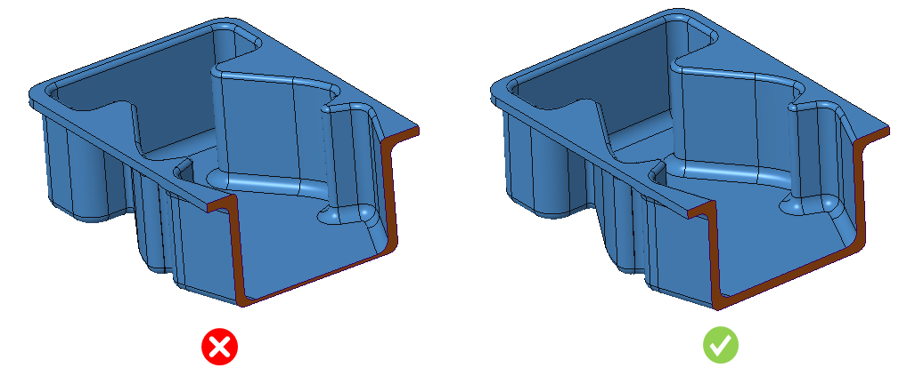

熱成形部品における肉厚（壁厚）のばらつきは、基準となる公称肉厚（ノミナル肉厚）に対して、許容範囲の公差内で発生する必要があります。
熱成形部品では、金型へスムーズに引き下ろしてドレープ（被せ）成形できるよう、肉厚（壁厚）のばらつきは一定の許容範囲（公差範囲）内で生じる必要があります。理想的には、肉厚は部品全体で均一（公称肉厚と同一）であるべきです。しかし実際にはばらつきは避けられないため、肉厚ばらつきは許容公差範囲内に収まる必要があります。
プラグアシスト熱成形におけるプラギングにより、材料は金型へ移動する前に前処理されます。これにより、部品端部での材料の薄肉化が最小化されます。スリップリング成形では、緩いクランプに対して同様の方法が用いられ、成形中に制御された量のスリップ（滑り）を許容します。これにより、材料が引き伸ばされるのではなく最終形状へ引き込まれるようになり、より均一な肉厚の実現に寄与します。
最小肉厚条件では、肉厚が公称肉厚より小さく、かつ許容される割合のばらつき内に収まっていない場合、失敗（不合格）となります。
最大肉厚条件では、肉厚が公称肉厚より大きく、かつ許容される割合のばらつき内に収まっていない場合、失敗（不合格）となります。
一般的なガイドラインでは、肉厚（壁厚）のばらつきは許容範囲内に収めるべきであるとされています。
DFMPro は面間の厚さを検証し、ばらつきが設定された許容公差範囲内であることを確認します。
